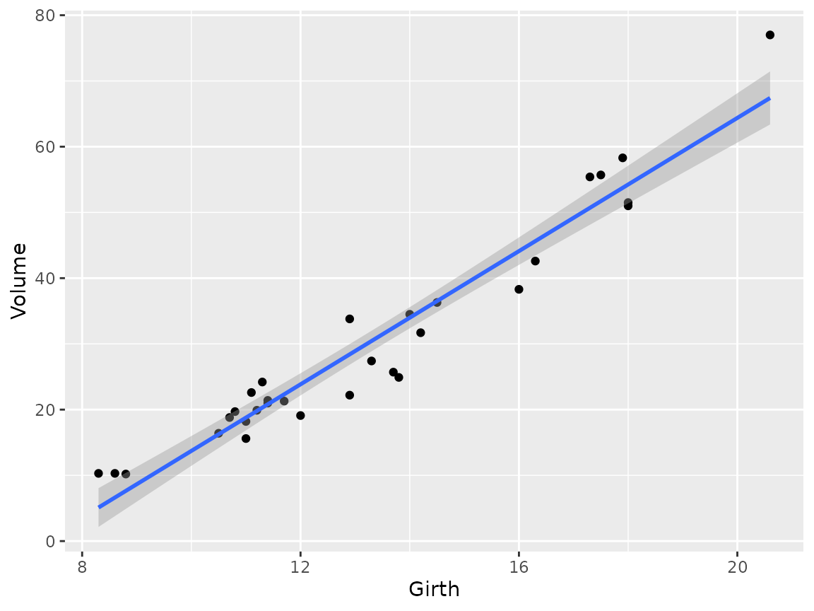
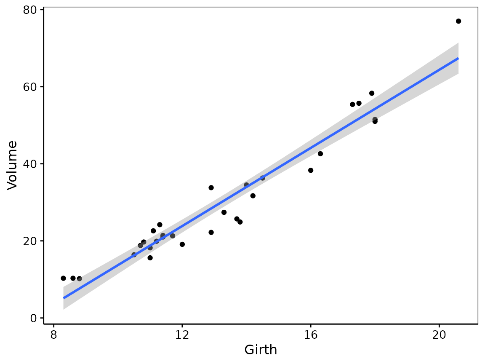
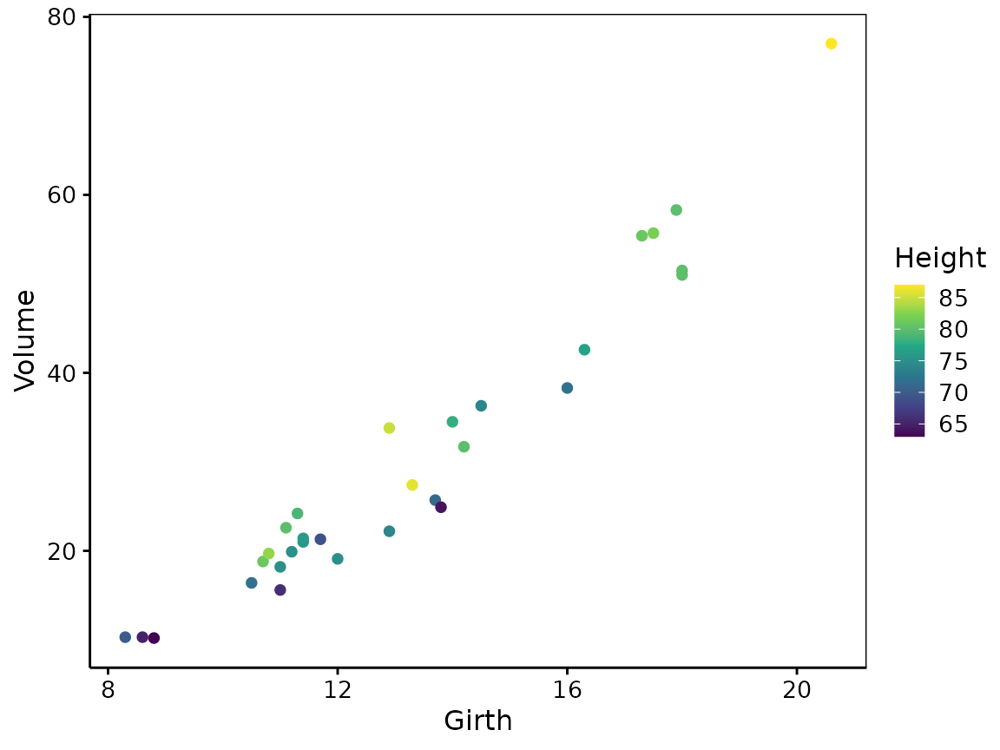
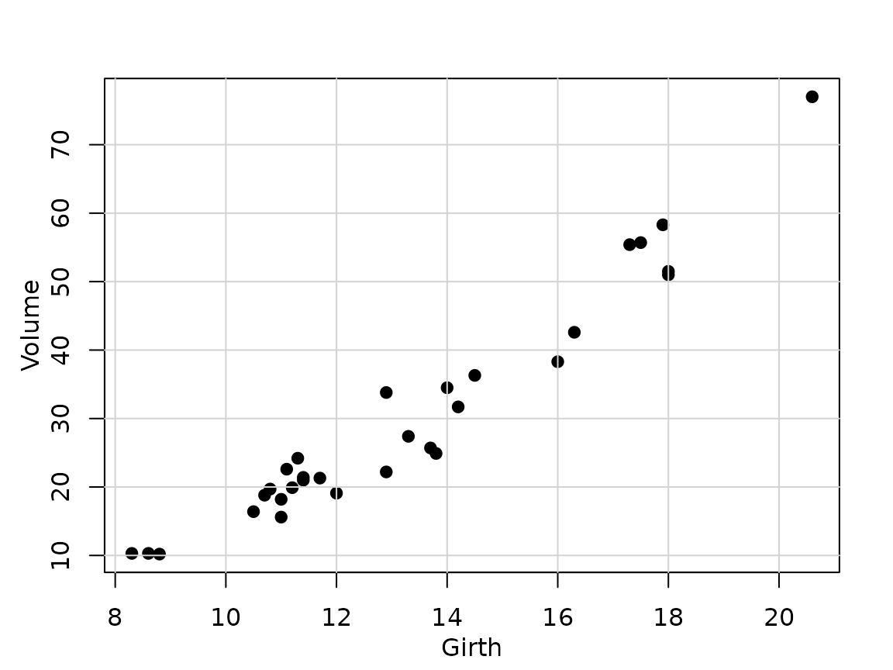
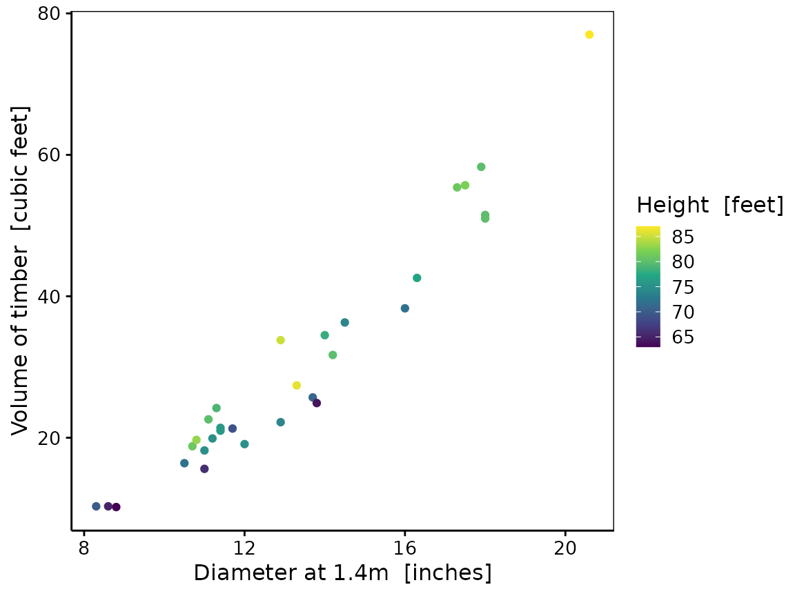

In this vignette, we explain some of the design choices behind the {chart} package, and why it can be useful for R users.
Formula versus aes()
Since the formula interface is used extensively in R to specify models, it is a little bit strange that corresponding plots with {ggplot2} must be specified in a totally different way. The {chart} package allows to specify the same “aesthetics” through the familiar formula interface. For instance, here is a simple model:
data(trees)
trees_lm <- lm(Volume ~ Girth, data = trees)
summary(trees_lm)
#>
#> Call:
#> lm(formula = Volume ~ Girth, data = trees)
#>
#> Residuals:
#> Min 1Q Median 3Q Max
#> -8.065 -3.107 0.152 3.495 9.587
#>
#> Coefficients:
#> Estimate Std. Error t value Pr(>|t|)
#> (Intercept) -36.9435 3.3651 -10.98 7.62e-12 ***
#> Girth 5.0659 0.2474 20.48 < 2e-16 ***
#> ---
#> Signif. codes: 0 '***' 0.001 '**' 0.01 '*' 0.05 '.' 0.1 ' ' 1
#>
#> Residual standard error: 4.252 on 29 degrees of freedom
#> Multiple R-squared: 0.9353, Adjusted R-squared: 0.9331
#> F-statistic: 419.4 on 1 and 29 DF, p-value: < 2.2e-16Our model is specified with Volume ~ Girth, which must
be translated into aes(x = Girth, y = Volume) in {ggplot2}.
A common pitfall for beginners is to invert X and Y here because they
appear in a different order in both interfaces.
library(ggplot2)
ggplot(trees, aes(x = Girth, y = Volume)) +
geom_point() +
geom_smooth(method = "lm", formula = 'y ~ x')
With {chart}, we can use the formula interface directly:
library(chart)
chart(trees, Volume ~ Girth) +
geom_point() +
geom_smooth(method = "lm", formula = 'y ~ x')
Of course, it is not necessarily the same formula
that is used for the model and the chart. The formula interface has
different meaning, depending on the function that uses it. To specify
more aesthetics in {chart} than just x and y,
we use %arg=% terms. For instance, to specify the color of
the points, we use %col=%:
chart(trees, Volume ~ Girth %col=% Height) +
geom_point()
The generic function chart()
On the contrary to ggplot(), chart() is a
generic. It means you do not have to specify a data
frame for data =, but you can provide any object
that has chart(), or autoplot() methods
defined. There are not many methods defined in the {chart} package
itself. Here is the method for function objects that
create base R plots, converted into {chart} compatible objects:
chart(function() {
plot(Volume ~ Girth, data = trees, pch = 19, col = "black")
grid(lty = "solid")
})
The {chart} package is designed as a basic framework to implement
several methods for different R objects. It uses the “subsettable type”
semantic, that is, its type = argument can define different
plots for the same object class, and then, calling
chart$<type>(....) produces the given type of plot
for your object.
TODO: make a short example here.
See packages like {modelit} or {exploreit} for several examples of such methods.
chart() produces near publication-ready plots
Another aspect of chart() is that it is tailored to
produce plots that are as close as possible to be publication-ready (but
they. remain fully editable with {ggplot2} functions, of course). Hence,
the default theme, and the labels of axes or legends are set up
accordingly. If the data frame has label and
units attributes defined for the variables, they are
used to construct the labels of the axes and legends. Here is an example
with the trees dataset:
trees <- svBase::labelise(trees, label = list(
Volume = "Volume of timber",
Girth = "Diameter at 1.4m",
Height = "Height"
), units = list(
Volume = "cubic feet",
Girth = "inches",
Height = "feet"))
chart(trees, Volume ~ Girth %col=% Height) +
geom_point()